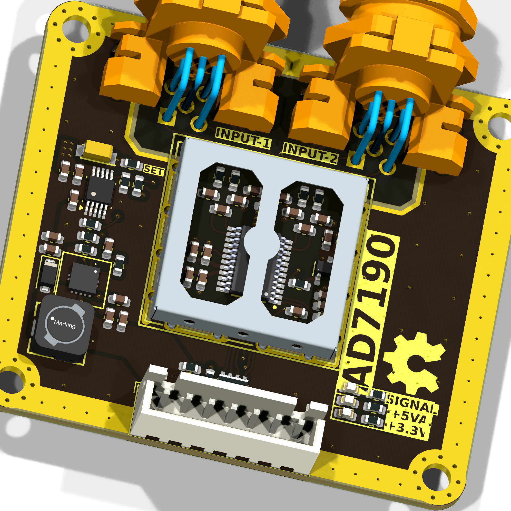
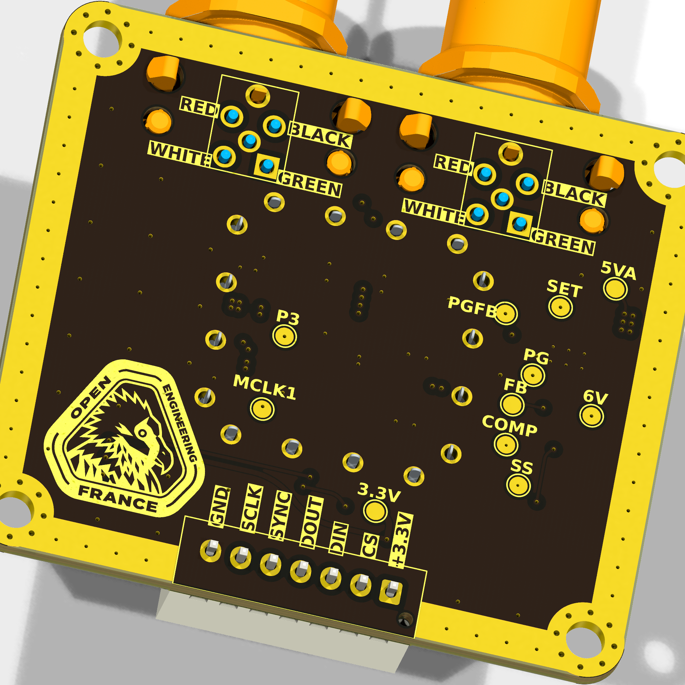
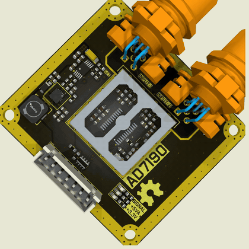
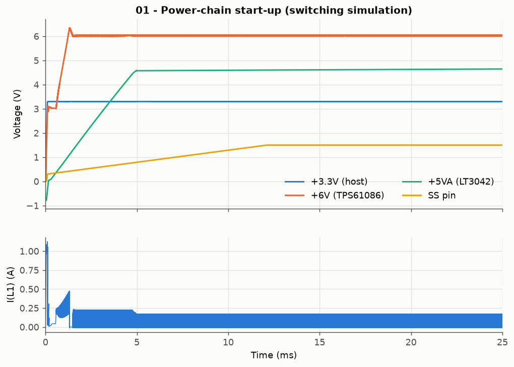
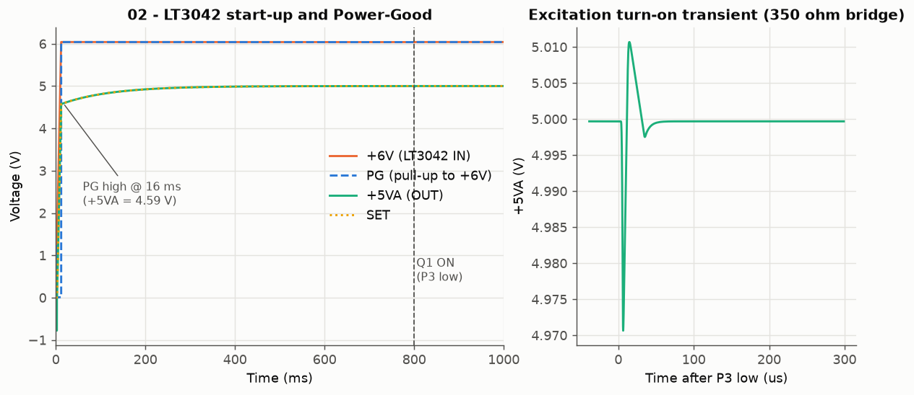
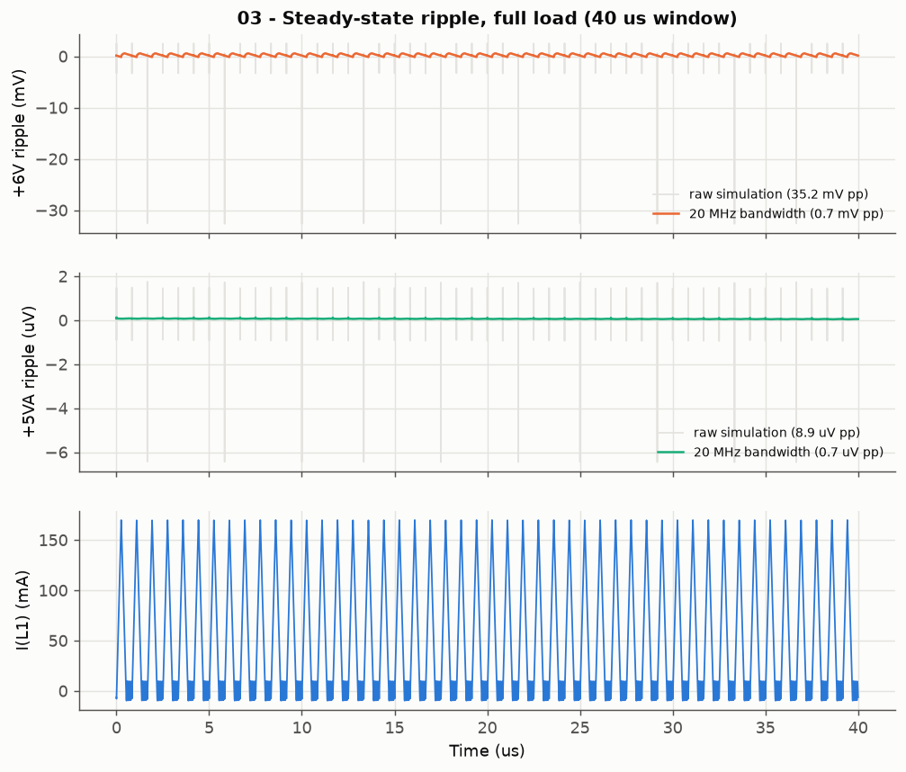
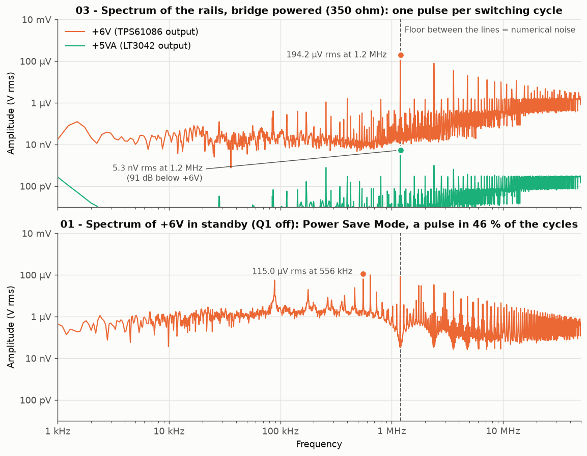
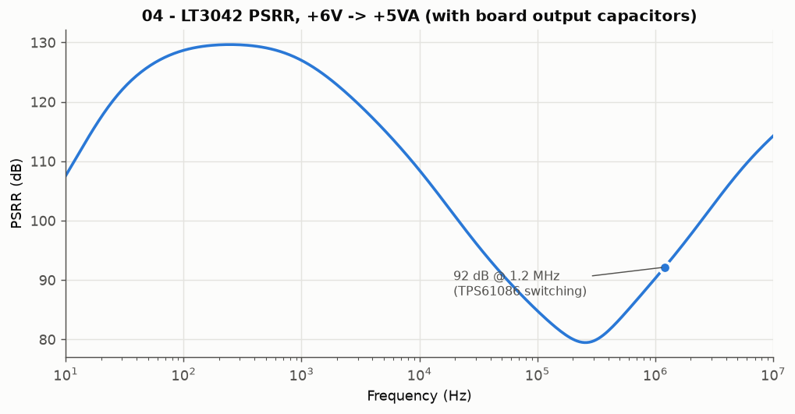
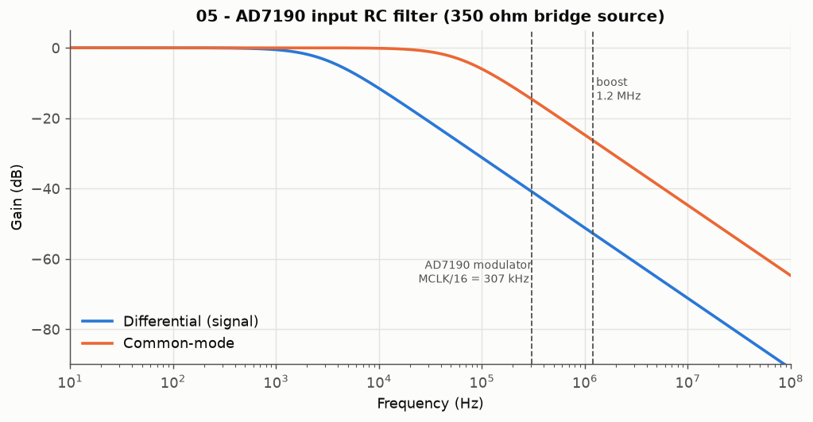

Manufacturing
Testing
Images
3D
Schematic
KiCanvas
KiRI
README file in Markdown format

OPEN_WEIGHT – AD7190
High-precision load-cell / force measurement PCB based on the AD7190
Sub-project of OPEN THRUST LAB





Full-resolution video: Images/OPEN_WEIGHT.mp4 (rendered with SpinRender) *** ## OVERVIEW **OPEN_WEIGHT** is an open-hardware measurement board developed as part of **OPEN THRUST LAB**, a community-driven project focused on building open-source test benches for drone motor characterization. This board is designed around the **Analog Devices AD7190**, a high-resolution 24-bit sigma-delta ADC optimized for precision bridge-sensor and load-cell measurements. Within the Open Thrust Lab ecosystem, OPEN_WEIGHT serves as the dedicated **force / thrust measurement interface**, enabling accurate acquisition from load cells for bench instrumentation and motor performance analysis. The board requires only a **3.3 V input** from the host system. An onboard TPS61086 boost converter steps this up to 6 V, which is then regulated down to a clean +5 V analog supply by an LT3042 ultralow-noise LDO. This two-stage architecture deliberately trades a small efficiency cost for a significantly cleaner AVDD rail, which directly reduces the measurement noise floor. No external 5 V supply is needed. The repository is structured as a full hardware project rather than a simple PCB dump. It includes: - KiCad 10 source files for schematic and PCB layout - **self-contained libraries**: every symbol, footprint and 3D model used on the board lives in `lib/` - manufacturing and assembly outputs - generated schematic and fabrication documentation - validation reports and test artifacts - 3D views and project visuals - automated output generation through **KiBot** - CI integration for reproducible deliverables OPEN_WEIGHT is meant to be: - reproducible - inspectable - manufacturable - easy to iterate on - aligned with open-hardware development practices *** ## PROJECT CONTEXT OPEN THRUST LAB is an open-source drone motor test-bench initiative covering hardware, firmware, sensors, data, and analysis. Inside this larger architecture, **OPEN-WEIGHT** is the sub-project dedicated to **precision thrust measurement** — an open-source load-cell amplifier and measurement PCB designed for integration into the bench. In the broader bench roadmap, this board contributes to the measurement chain used to characterize motor performance through reliable sensor acquisition and fully documented hardware design. *** ## DESIGN GOALS - Provide a precise measurement front-end for load-cell based force sensing - Operate entirely from a 3.3 V host rail — no external analog supply required - Support thrust instrumentation in a modular test-bench architecture - Expose a clean and reusable KiCad 10 project structure - Automate hardware deliverables with KiBot and CI - Make fabrication and assembly easier through fully generated outputs - Support future revisions, validation, and characterization work *** ## SPECIFICATIONS ### Electrical specifications | Parameter | Value | | --- | --- | | Input voltage (VIN) | 3.3 V (from host system) | | Boost output — TPS61086 | 6 V | | Analog supply — LT3042 (AVDD) | 5 V, ultralow-noise | | Digital supply (DVDD) | 3.3 V (from host) | | ADC | AD7190, 24-bit sigma-delta | | PGA gain range | 1 – 128 | | Voltage reference | Ratiometric: REFIN1± = bridge excitation (EXC+/EXC−) — no separate reference IC | | Digital interface | SPI — Mode 3 (CPOL=1, CPHA=1), max 5 MHz | | Additional SPI signal | SYNC — filter reset / multi-device synchronization | | Clock | 4.9152 MHz ceramic resonator (Y2) on MCLK1/MCLK2 | | Load cell excitation control | Q1 SI2303 P-MOS high-side switch, gate driven by AD7190 **P3** (GPOCON register); low side through **BPDSW** | | Sensor type | 2 × 4-wire Wheatstone bridge (AIN1/AIN2 and AIN3/AIN4) | | Full-scale input (gain 128) | ±VREF/128 = ±39 mV with 5 V excitation | ### Power budget Power chain: **+3.3 V (host) → TPS61086 → +6 V → LT3042 → +5VA → AD7190** | Stage | Input rail | Typical current | Typical power | | --- | --- | --- | --- | | AD7190 analog (AVDD, gain=128, ODR=10 Hz) | +5VA | ~4 mA | ~20 mW | | Resonator + RC filters + misc analog | +5VA | ~1 mA | ~5 mW | | Load cell excitation (4-wire bridge, ~350 Ω) | +5VA | ~14 mA | ~70 mW | | LT3042 quiescent | +6V | ~2 mA | ~12 mW | | **LT3042 total input load** | **+6V** | **~21 mA** | **~126 mW** | | AD7190 digital (DVDD) | +3.3V | ~1 mA | ~3.3 mW | | TPS61086 input (η ≈ 85–90 % at this load) | **+3.3V** | **~45–50 mA** | **~148–165 mW** | | **Board total estimated** | **+3.3V** | **~46–51 mA** | **~151–168 mW** | > **Note:** Load cell excitation current depends on bridge resistance. The estimate above assumes a 350 Ω full bridge at 5 V excitation (~14 mA). A 1000 Ω bridge draws ~5 mA instead, reducing total board consumption significantly. TPS61086 efficiency is estimated from the datasheet curve at Vin=3.3 V, Vout=6 V. Always measure at your specific operating point using the **+3.3V_IN** test point on Page 6. ### Physical specifications | Parameter | Value | | --- | --- | | Project name | OPEN_WEIGHT | | Board name | AD7190 | | Parent project | OPEN THRUST LAB | | CAD tool | KiCad 10 | | Automation tooling | KiBot + GitHub Actions | | Dimensions | 54.0 × 48.0 mm | | Mounting holes | 4× M3, connected to GND | | Fiducials | Not fitted on this revision (FID1–FID6 excluded from board) | | Fabrication target | JLCPCB 4-layer, JLC04161H-7628, 1.6 mm (rules in `OPEN_WEIGHT.kicad_dru`) | | Repository status | In active development | | Hardware licence | CERN-OHL-P v2 | *** ## SCHEMATIC ARCHITECTURE The project is organized into five functional hierarchical sheets (under `Project Architecture`), plus the documentation sheets (Revision History, Block Diagram, Power - Sequencing): | Page | Sheet (file) | Description | | --- | --- | --- | | 4 | `AD7190_Weight_Sensor` (`AD7190 - Weight Sensor.kicad_sch`) | AD7190 24-bit sigma-delta ADC front-end for Wheatstone bridge acquisition. Differential inputs on SENSE± and OUT± lines with RC input filtering. SPI interface (CS, DIN, DOUT, SCLK, SYNC). 4.9152 MHz ceramic resonator (Y2). Ratiometric reference REFIN1 = SENSE± (bridge excitation). Dual-supply decoupling (+5VA analog / +3.3V digital). Q1 P-MOS excitation switch driven by AD7190 P3. Test points on all critical analog and digital nodes. | | 5 | `LT3042_6V_to_5VA` (`LT3042 - LDO 6V to 5VA.kicad_sch`) | Low-noise 5 V analog supply for ADC front-end (AVDD). LT3042 ultralow-noise LDO (PSRR > 75 dB). Input: +6V from boost stage. Output: +5VA regulated via RSET = 50 kΩ (ISET = 100 µA). Solid tantalum capacitor on SET pin (C14 = 2.2 µF) for noise suppression — soft-start time constant RSET·CSET = 110 ms. Power-Good monitoring via PGFB divider. Test points: VIN, VOUT, SET, PGFB, PG. | | 6 | `TPS61086_3.3V_to_6V` (`TPS61086 - Boost 3V3 to 6V.kicad_sch`) | 3.3 V to 6.04 V boost converter (external Schottky D3) supplying the LT3042 stage. TPS61086 switching at 1.2 MHz fixed frequency (PWM/PFM selectable via MODE pin). Integrated 2.0 A / 0.13 Ω power switch. Output voltage set via FB divider R17/R15 (1.238 V × (1 + 69.8k/18k) = 6.04 V). Input/output decoupling, soft-start, and loop compensation network. Test points: +3.3V_IN, +6V_OUT, FB, COMP. | | 7 | `Holes, Fiducials` (`Holes - Fiducials.kicad_sch`) | Mechanical references for PCB fabrication and assembly. Four GND-connected mounting holes (H1–H4, M3). Fiducial symbols FID1–FID6 are kept in the schematic but excluded from the board on this revision. | | 8 | `Connectors` (`Connectors.kicad_sch`) | External interface connectors for load cell and host communication. Two 5-pin load-cell connectors J2/J4 (21033213501: OUT, OUT, EXC+, EXC−, GND). 7-pin JST-XH host header J1 (+3.3V, CS, DIN, DOUT/RDY, SYNC, SCLK, GND). WE-SHC shielding frame H5 over the analog front-end. | *** ## SIMULATION (LTspice) The analog power chain and the ADC input filter are simulated with **LTspice 26** in [`Simulation/LTspice/`](Simulation/LTspice). Every component value comes from the KiCad netlist (reference designators are the same as on the schematic), so the schematics can be opened side by side with the KiCad sheets. | File | Analysis | What it checks | | --- | --- | --- | | `01_Power_Chain_Startup.asc` | `.tran` 600 ms, switching | +3.3V → TPS61086 → +6V → LT3042 → +5VA: boost soft-start, inductor current, +5VA settling to 5 V | | `02_LT3042_Startup.asc` | `.tran` 1 s | +5VA rise, Power-Good, load-cell excitation turn-on (Q1) | | `03_Power_Ripple.asc` | `.tran` 6 ms, switching | Boost ripple on +6V and what remains on +5VA (waveform and FFT), input current | | `04_LT3042_PSRR.asc` | `.ac` 10 Hz – 10 MHz | LT3042 ripple rejection with the board's capacitors | | `05_AD7190_Input_Filter.asc` | `.ac` 10 Hz – 100 MHz | Differential / common-mode response of the AIN RC filter | **Models** - **LT3042**: official Analog Devices model shipped with LTspice. - **TPS61086**: TI does not provide an LTspice model, so `TPS61086_behav.sub` / `.asy` is a **behavioral model** written for this project from the datasheet (SLVSA05B): 1.2 MHz peak-current-mode PWM, gm = 107 µA/V error amplifier, VREF = 1.238 V, 0.13 Ω switch, 2.6 A current limit, 10 µA soft-start, Power Save Mode (MODE = GND, as on the board). The current-sense gain and slope compensation are not published and are estimated. - **D3**: PMEG2010AEH modelled with the LTspice PMEG2010EA (same 20 V / 1 A Nexperia MEGA Schottky family). **Q1**: approximate VDMOS model of the SI2303CDS. - Load on +5VA: AD7190 AVDD (4.5 mA) + one 350 Ω bridge + D4 LED. Ceramic capacitors use nominal values (no DC-bias derating). **Results** | Quantity | Simulated | Notes | | --- | --- | --- | | +6V output (TPS61086) | 6.037 V | FB divider R17/R15, 1.238 V × (1 + 69.8k/18k) | | +6V reaches 90 % | 1.1 ms | +6V is precharged to ≈ VIN − VF through L1/D3 before the boost starts | | +6V start-up overshoot | 6.35 V | well within the LT3042 20 V input rating | | Peak inductor current at start-up | 1.13 A | below the 2.5 A Isat of L1 | | +6V ripple, 20 MHz bandwidth | 0.7 mV pp | discontinuous conduction at 1.2 MHz, I(L1) peak ≈ 170 mA; the raw trace shows 35 mV single-sample spikes on the switching edges | | +5VA ripple, 20 MHz bandwidth | < 1 µV pp | 9 µV pp raw, at the numerical resolution of the simulation | | +6V spectrum, bridge powered | 194 µV rms at 1.2 MHz | FFT of simulation 03: only the switching frequency and its harmonics (78 / 35 / 20 µV rms); 2.8 µV rms in total from 1 kHz to 1 MHz | | +5VA spectrum, bridge powered | 5.3 nV rms at 1.2 MHz | 91 dB below +6V, in line with the AC analysis below | | +6V spectrum in standby (Q1 off) | lines from ≈ 90 kHz, up to 115 µV rms | Power Save Mode: the boost only switches in 46 % of the cycles, which spreads the ripple below 1.2 MHz (231 µV rms from 1 kHz to 1 MHz) | | LT3042 PSRR at 1.2 MHz | 92 dB | ideal layout; real PSRR at MHz is limited by PCB coupling | | PG goes high | ≈ 5 ms | end of the LT3042 fast start-up (+5VA = 4.59 V) | | +5VA after 25 ms / 600 ms | 4.645 V / 4.998 V | complete switching chain (01); after the fast start-up +5VA only rises with τ = RSET·CSET = 110 ms, so a short simulation window shows it below 5 V | | +5VA reaches 99 % / 99.9 % | 241 ms / 494 ms | complete switching chain (01); 248 ms / 501 ms in 02, where the boost is a 12 ms ramp | | +5VA dip when Q1 turns on | 29 mV | 350 Ω bridge + SENSE± capacitors switched onto +5VA | | Bridge excitation V(SENSE+) − V(SENSE−) | 4.955 V | Q1 RDS(on) + BPDSW drop | | Input current from the host (+3.3V) | 66.5 mA | includes D1 (≈ 15 mA) and D4 (≈ 5 mA) LEDs | | Input filter −3 dB, differential | 2.76 kHz | 350 Ω bridge + 2 × 100 Ω, C28 + C27/C29 | | Input filter −3 dB, common-mode | 57.9 kHz | 175 Ω + 100 Ω, C27/C29 | | Differential attenuation at 1.2 MHz | −53 dB | boost switching frequency |






**Re-run the simulations** (Windows, LTspice installed in the default location): ```bash cd Simulation/LTspice python run_simulations.py # runs LTspice in batch mode, redraws Images/Simulation/*.png and results.md python run_simulations.py --only 03 04 # runs only these simulations, then redraws python run_simulations.py --no-run # only redraw from the existing .raw files ``` Or open any `.asc` in LTspice and press *Run*. Simulation 03 switches at 1.2 MHz and takes about a minute. Simulation 01 covers 600 ms of 1.2 MHz switching: about 30 minutes and a 2.8 GB `.raw` file (set `.tran 0 25m` to look at the boost soft-start only, about 1 minute). > The simulations validate the design intent (regulation, sequencing, filtering). They do not replace bench measurements: layout parasitics, capacitor DC-bias derating and the real TPS61086 control loop will change the ripple figures. *** ## LOAD CELL CONNECTION The board accepts any standard **4-wire Wheatstone bridge** load cell. ### Load-cell connectors J2 / J4 (21033213501, 5 pins) | Pin | Net (J4 / J2) | Function | | --- | --- | --- | | 1 | IN-OUT+ / IN-OUT+2 | Bridge signal output (through 100 Ω + RC filter) | | 2 | IN-OUT− / IN-OUT−2 | Bridge signal output (through 100 Ω + RC filter) | | 3 | SENSE+ | Excitation + (switched +5VA from Q1) and REFIN1(+) | | 4 | SENSE− | Excitation − (AD7190 BPDSW low-side switch) and REFIN1(−) | | 5 / shell | GND | Cable shield | J4 → AIN1/AIN2, J2 → AIN3/AIN4. Both channels measure **V(pin 2) − V(pin 1)**: if the load reads negative, swap the signal wires or invert the sign in firmware. > ⚠️ Load cell cable colors vary by manufacturer. Always verify EXC± and SIG± with a multimeter **before** powering the board. > ⚠️ The excitation is switched by **Q1 (P-MOS)** whose gate is driven by the AD7190 **P3** pin. Enable it through the GPOCON register (GP32EN = 1, P3DAT = 0 → Q1 on). Do not enable excitation during internal calibration. ### Compatible load cell characteristics - Differential output: **0 – 20 mV/V** at rated excitation - Bridge resistance: **120 Ω to 1000 Ω** full bridge - Ratiometric measurement: with gain 128 and 5 V excitation, full-scale input = ±5 V / 128 = **±39 mV** ### Host header J1 (JST-XH B7B-XH-AM, 7 pins) | Pin | Signal | Direction | Notes | | --- | --- | --- | --- | | 1 | +3.3V | Power in | Board supply (boost input + AD7190 DVDD) | | 2 | CS | Input | Active low (100 kΩ pull-up R8) | | 3 | DIN | Input | Serial data to AD7190 (100 Ω series, RN1) | | 4 | DOUT/RDY | Output | Serial data from AD7190; also goes low when a conversion is ready | | 5 | SYNC | Input | Active low — resets the digital filter; tie high if unused | | 6 | SCLK | Input | SPI clock, max 5 MHz | | 7 | GND | — | Common ground | > ⚠️ SPI Mode 3 only (CPOL=1, CPHA=1). There is no separate DRDY pin: poll DOUT/RDY with CS low. *** ## STARTUP SEQUENCE After 3.3 V is applied, allow the following stages to complete before issuing any SPI command (see schematic page 9, *Power - Sequencing*; values from the [LTspice simulations](#simulation-ltspice)): | Stage | Duration | Indicator | | --- | --- | --- | | TPS61086 boost start-up (C18 soft-start) | +6V at 90 % after ~1.1 ms, settled after ~2 ms (short 6.35 V overshoot) | +6V reaches 6.04 V (TP11) | | LT3042 fast start-up (2 mA into CSET while PGFB < 300 mV) | +5VA reaches 4.59 V after ~5 ms | PG (TP17) goes high at 4.59 V | | LT3042 final settling (RSET 50 kΩ × CSET 2.2 µF = τ 110 ms) | 99 % after ~250 ms, 99.9 % after ~500 ms | +5VA (TP10) | | **Minimum safe delay** | **≥ 600 ms** from power-on | +5VA settled | > PG goes high long before +5VA is settled: it only indicates the end of the fast start-up phase. Use the delay, not PG, before calibrating. > To start faster, reduce C14 (e.g. 0.47 µF → τ = 23.5 ms) at the cost of slightly higher low-frequency noise. After the delay, the recommended initialization sequence is: ``` 1. Issue AD7190 serial reset: assert CS̄, write 40+ bytes of 0xFF on DIN 2. Write CONF register (gain, reference, chop settings) 3. Write MODE register (filter, ODR) 4. Run internal zero-scale calibration — wait for DRDȲ 5. Run internal full-scale calibration — wait for DRDȲ 6. Enable load cell excitation: GPOCON GP32EN=1, P3DAT=0 (Q1 on) 7. Run system calibration with known reference weight 8. Enter continuous conversion mode ``` *** ## CALIBRATION Two levels of calibration are required. Both must be repeated after every power cycle. ### 1. Internal calibration Corrects the ADC's own offset and gain. Requires no external weights. Must be re-run after any change to PGA gain or ODR. ``` Write MODE register: MD[2:0] = 0b001 (internal zero-scale) → Wait for DRDȲ to go low Write MODE register: MD[2:0] = 0b010 (internal full-scale) → Wait for DRDȲ to go low Results are saved in the ZERO and FULLSCALE registers. Read them back to cache for faster subsequent startups. ``` ### 2. System calibration Maps ADC output codes to physical units. Repeat any time the mechanical setup changes. ``` 1. Remove all load → average ≥16 samples → raw_zero 2. Apply known weight W_ref → average ≥16 samples → raw_full 3. scale_factor = W_ref / (raw_full − raw_zero) 4. weight = (raw_code − raw_zero) × scale_factor ``` ### Recommended register configuration | Register | Field | Value | Reason | | --- | --- | --- | --- | | `CONF` | GAIN[2:0] | `0b111` (128×) | Maximizes resolution for low-sensitivity load cells | | `CONF` | REFSEL | `0b0` | REFIN1± = bridge excitation (ratiometric) | | `CONF` | CHOP | `1` | Reduces offset and drift | | `MODE` | SINC | `0b11` (SINC4) | Best 50/60 Hz rejection | | `MODE` | FS[9:0] | `0x1E0` (480) | fADC = 4.9152 MHz / (1024 × FS) ≈ 10 Hz without chop — rejects 50/60 Hz (with CHOP=1 the rate is lower, see datasheet) | > ⚠️ After any change to GAIN, ODR, or filter settings, the sigma-delta pipeline resets. Always re-run internal calibration before taking measurements. > ⚠️ At gain 128 with the 5 V ratiometric reference: full-scale input range = **±39 mV**. A 2 mV/V load cell at 5 V gives 10 mV at full load. *** ## HOW TO USE ### Prerequisites - **KiCad 10** (files are saved in KiCad 10 format and cannot be opened with KiCad 9 or earlier) - Nothing else: all symbols, footprints and 3D models are in `lib/` and referenced relative to the project (`KIPRJMOD`, project-local `sym-lib-table` / `fp-lib-table`) - **KiBot** for automated output generation - **Docker** recommended for reproducible local CI runs - Debian/Ubuntu or equivalent environment ### Generate outputs locally ```bash # Default configuration ./kibot_launch.sh # Specific variant ./kibot_launch.sh -v CHECKED ``` | Variant | Outputs | ERC/DRC | Typical use | | --- | --- | --- | --- | | `DRAFT` | Schematic only | — | Early design work | | `PRELIMINARY` | Schematic + PCB | — | Layout iterations | | `CHECKED` | Full | ✓ enforced | Design review, PR validation | | `RELEASED` | Full | ✓ enforced | Tagged version releases | ### Use a manufactured board ```c // --- After >= 600 ms from 3.3V power-on (LT3042 soft-start, see page 9) --- // 1. Reset ad7190_reset(); // 40× 0xFF on DIN // 2. Configure ad7190_write_reg(REG_CONF, CONF_GAIN_128 | CONF_CHOP | CONF_REFSEL_REFIN1); ad7190_write_reg(REG_MODE, MODE_SINC4 | MODE_FS_10HZ); // 3. Internal calibration ad7190_write_reg(REG_MODE, MODE_INT_ZERO_CAL); while (drdy_is_high()); ad7190_write_reg(REG_MODE, MODE_INT_FULL_CAL); while (drdy_is_high()); // 4. Enable load cell excitation ad7190_write_reg(REG_GPOCON, GPOCON_GP32EN); // P3 = 0 -> Q1 on // 5. System calibration uint32_t raw_zero = ad7190_average(16); // No load apply_reference_weight(); uint32_t raw_full = ad7190_average(16); float scale = W_ref / (float)(raw_full - raw_zero); // 6. Continuous measurement ad7190_write_reg(REG_MODE, MODE_CONTINUOUS); while (1) { while (drdy_is_high()); uint32_t raw = ad7190_read_data(); float weight = (raw - raw_zero) * scale; } ``` *** ## REPOSITORY CONTENT | Content | Description | | --- | --- | | Schematic sources | KiCad hierarchical schematic — 10 sheets | | PCB layout | KiCad PCB with all production layers | | Manufacturing | Gerbers, drill tables, BoM, pick-and-place files | | Validation | ERC/DRC reports, test-point tables | | 3D exports | STEP files and rendered views | | Documentation sheets | Block diagram, architecture, power sequencing, revision history | | CI resources | GitHub Actions workflows, KiBot YAML configurations | | Computations | Design notes, filter and power budget calculations | | Simulation | LTspice simulations of the power chain and ADC input filter | *** ## DIRECTORY STRUCTURE . ├─ Computations # Design notes, formulas, and power budget calculations ├─ HTML # Generated HTML pages and web outputs ├─ Images # Pictures, renders, and visual assets │ ├─ kibot_resources # External resources used by KiBot │ ├─ colors # Color themes for KiCad outputs │ ├─ fonts # Fonts used in generated documents │ ├─ scripts # Helper scripts used with KiBot │ └─ templates # Templates for KiBot reports and generated outputs │ ├─ kibot_yaml # KiBot YAML configuration files ├─ KiRI # KiRI PCB diff viewer files │ ├─ lib # Project libraries (self-contained) │ ├─ lib_sym # OPEN_WEIGHT.kicad_sym — every symbol used │ ├─ lib_fp # OPEN_WEIGHT.pretty — every footprint used │ └─ 3d_models # STEP models referenced by the footprints │ ├─ Logos # Project logos and branding assets │ ├─ Manufacturing │ ├─ Assembly # BoM, position files, assembly notes │ └─ Fabrication # Gerbers, drill tables, fabrication notes │ ├─ Drill Tables │ └─ Gerbers │ ├─ Mechanical # Enclosure / support CAD (STEP; SolidWorks & STL kept local) ├─ Report # ERC / DRC reports and validation outputs ├─ Schematic # Exported schematic PDFs ├─ Simulation │ └─ LTspice # LTspice schematics, TPS61086 behavioral model, run/plot script ├─ Templates # Drawing sheets and title block templates ├─ Testing │ └─ Testpoints # Test point tables and documentation │ └─ Variants # Outputs for project / assembly variants *** ## DEVELOPMENT WORKFLOW This project uses a reproducible hardware workflow based on **KiCad 10**, **KiBot**, and **GitHub Actions**. The CI pipeline (`.github/workflows/ci.yaml`) runs KiBot on every push to `dev` or `main` and commits the generated outputs back ("Update Outputs" commits). **Always `git pull` after the CI has run, before editing the project again**, otherwise the regenerated files (`.kicad_pro`, BoM, netlist, README…) will conflict. > ℹ️ `README.md` is **generated** by KiBot from `kibot_resources/templates/readme.txt`. Edit the template, not `README.md`, or your changes will be overwritten by the next CI run. **Branch convention:** - `dev` — development branch, all work branches off here - Feature branches: `feat/description` - Fix branches: `fix/description` - `main` — only receives merges from `dev`; releases are tagged here **Project metadata** (project name, board name, company, designer, logo, repository URL) is defined once in `kibot_yaml/kibot_main.yaml` (`definitions:` section) and propagated to title blocks, documents and this README. **Release a new hardware revision:** 1. On `dev`, fill the `[Unreleased]` section of [CHANGELOG.md](CHANGELOG.md) (Added / Changed / Fixed / Removed). 2. Merge `dev` into `main`: `git checkout main && git pull && git merge dev && git push` 3. Tag with a plain semantic version (**no `v` prefix**, the CI only matches `X.Y.Z`): `git tag 1.0.0 && git push origin 1.0.0` 4. The CI builds the `RELEASED` variant, publishes a GitHub Release with fabrication files, and moves `[Unreleased]` to the new version in `CHANGELOG.md`. 5. Re-sync `dev`: `git checkout main && git pull && git checkout dev && git merge main` *** ## TROUBLESHOOTING | Symptom | Likely cause | Fix | | --- | --- | --- | | Output stuck at 0 or inverted | EXC± wiring error | Verify bridge polarity with multimeter | | Output always at full-scale | SIG+ / SIG− swapped | Swap the two signal wires | | Garbage SPI readings | SPI mode mismatch | Set host to Mode 3 (CPOL=1, CPHA=1) | | Readings drift over time | No internal cal after power-on | Re-run zero-scale + full-scale internal calibration | | DOUT/RDY never goes low | Resonator not oscillating | Reflow Y2 (4.9152 MHz resonator) | | SPI reads 0xFF | CS̄ stuck high or SCLK too fast | Check CS̄ GPIO; reduce SCLK to ≤ 5 MHz | | 50/60 Hz interference | ODR too high or wrong filter | Use SINC4 + FS = 0x00A (10 Hz ODR) | | +5VA absent at power-on | TPS61086 not switching | Verify +3.3V_IN; check inductor L1 solder joints | | +5VA present but noisy | LT3042 SET pin cap issue | Reflow solid tantalum cap on SET pin (Page 5) | | No excitation on load cell | Q1 off | Write GPOCON: GP32EN = 1, P3DAT = 0 | | First readings drift for ~0.5 s | +5VA still rising (τ = 110 ms) | Wait ≥ 600 ms after power-up before calibration | | Offset drifts after warmup | Thermal settling | Allow 5–10 min warmup; re-tare before measurements | *** ## CONTRIBUTING Contributions are welcome — hardware corrections, documentation improvements, firmware examples, and validation reports all add value to the project. ### Requirements - **KiCad 10** — not backwards-compatible with earlier versions - Respect existing layer naming, reference designator conventions, and title block format - All hardware contributions must pass ERC and DRC under the `CHECKED` variant ### Workflow 1. Fork the repository 2. Create a branch off `dev`: `feat/your-description` or `fix/your-description` 3. Make your changes 4. Run `./kibot_launch.sh -v CHECKED` — resolve all ERC/DRC violations 5. Open a Pull Request against `dev` with a clear description of the change and its rationale ### Reporting issues Open a GitHub Issue and include: - Board revision (from silkscreen or revision history sheet) - Photos or annotated screenshots of the affected area - Symptom and conditions under which it occurs - ERC/DRC report if design-related *** ## CHANGELOG See [CHANGELOG.md](CHANGELOG.md) for the full board revision history following [Keep a Changelog](https://keepachangelog.com/) conventions with semantic versioning. *** ## LICENSE Hardware design files in this repository are released under the **CERN Open Hardware Licence Version 2 – Permissive (CERN-OHL-P v2)**. See [LICENSE](LICENSE) for the full licence text. Under CERN-OHL-P v2: - You may use, study, modify, and manufacture this design freely - Derivative works do **not** need to remain open-source - Modified files must carry a notice identifying the changes made and their author - The original copyright and attribution notice must be preserved > For more on CERN-OHL licences: [ohwr.org/cern_ohl](https://ohwr.org/cern_ohl)